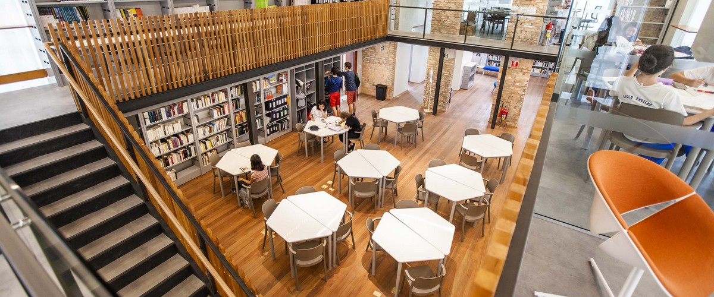

Situé au coeur de São Paulo, le lycée Pasteur est l'unique école française de São Paulo. Constituée de deux unitée (Vergueiro et Mairinque) ce lycée acceuil plus de 840 élèves de la maternelle à la terminale. Parmis ces élèves, nous retrouvons Achille, Julian ou encore Daniel. Fondé en 1923 puis adoptant le nom de PASTEUR en 1941, le lycée pasteur fêtra ses 100 ans en 2023. Fournissant un enseignement de qualité, cet établissement offre un enseignement franco-brésilien de qualité. Doté de tout types d'infrastructure pédagogiques, cet établissement est un lieu idéal pour s'épanouir et apprendre à coder!
